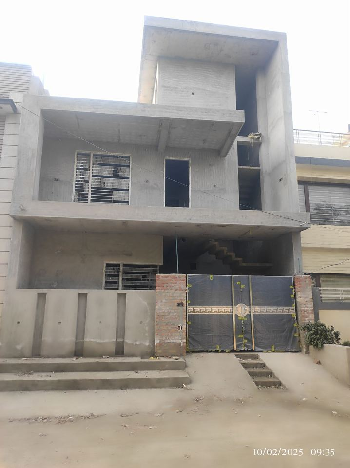
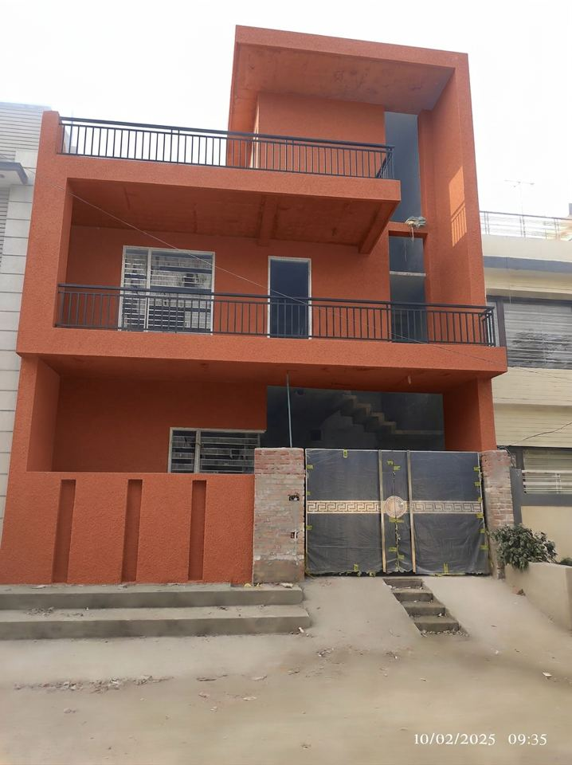
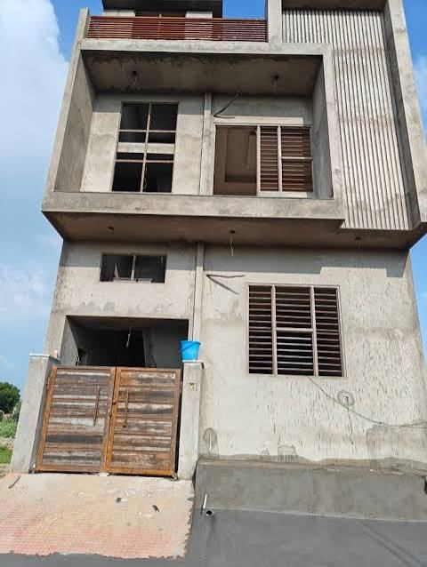
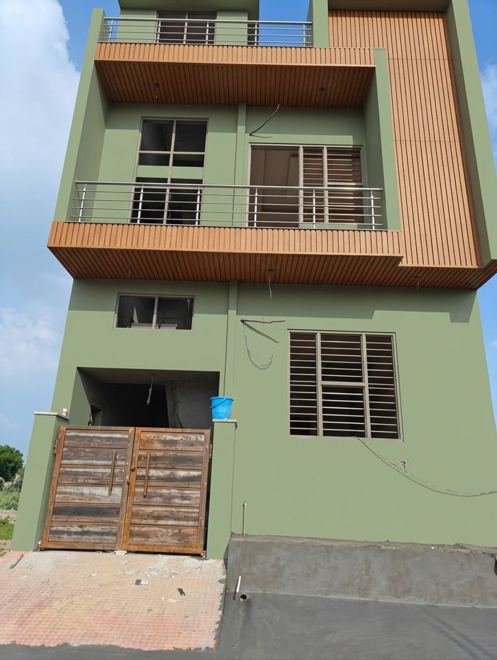
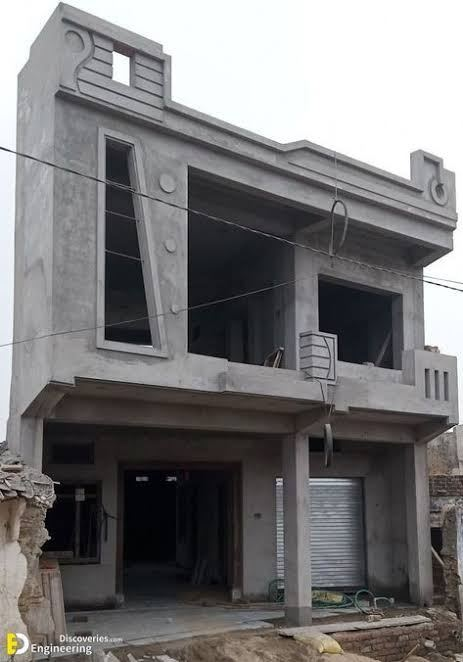
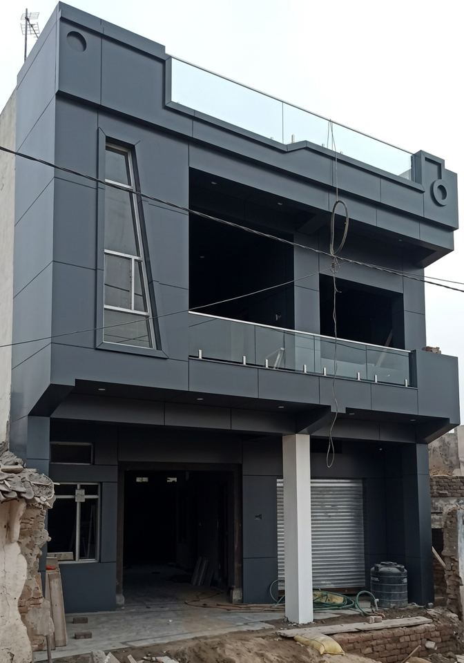

E2M Solutions · Associate AI Engineer · Assessment submission
Miesign
An AI pre-construction planner for Indian homeowners: upload one photo of the house front, choose colours and materials, see the house redesigned, and get material quantities and an itemised cost in rupees for your city.
Designed and built by Mihir Kapildev TiwariSubmitted 31 Oct 2026Brief: “AI-Based Exterior House Renovation & Cost Estimation System”
6guided steps, photo to PDF
9building part types detected
12catalog materials · 91 cities
121automated tests passing
2–4°hue error on real photos
1 · Prototype and access
Prototype and access
Live link: added here once deployment finishes (frontend on Cloudflare Pages, API on a Google Cloud e2-micro VM, AI on Vertex AI).
No login needed. Starting a project creates a private link (?p=<project id>). Anyone with that link can reopen and keep editing the project, which is how saving and re-editing work.
Best on: any modern browser, phone or desktop. Layout is checked at 320, 375, 768 and 1440 px.
Try it with: a straight-on daytime photo of a low-rise house front. Phone and WhatsApp-sized photos (from 400 px on the short side) are accepted.
Previews: each project can render 8 redesigns. Re-rendering an unchanged design is free.
2 · Requirements coverage
Every requirement in the brief, and where it lives
Brief
Requirement
What Miesign does
5.1
Media upload
Upload up to 5 photos. Each is rotated from EXIF, scaled to ≤ 2048 px, checked locally for size and blur, then checked by Gemini (“is this a house front, is it visible?”). Rejected photos show the reason and how to retake; accepted ones show tips. The first usable photo becomes the working photo.managers/photos.py · steps/PhotoStep.tsx
5.2
Structure identification
Gemini detects walls, windows, doors, balconies, pillars, parapets, gates, roof edges and railings as boxes on the photo. The user reviews them on a canvas and can move a part, drag its corners, change its type, delete it or add a new one.ai.detect_structure · managers/structure.py · RegionCanvas.tsx
5.3
Design and material selection
A 12-item catalog (paints, texture, stone cladding, tiles, ACP and WPC panels, glass / steel railings) with durability, upkeep, budget and climate fit. Three ways in: describe it in words, answer five questions for three suggestions, or pick a material and colour per part. Several designs per project; switch and edit freely.data/catalog.json · managers/designs.py · steps/DesignStep.tsx
5.4
Renovation visualisation
The user’s own photo is edited by Gemini’s image model with strict “keep the structure” rules and a swatch card of the exact colours. Before/after slider plus a legend of what changed.ai.render · steps/PreviewStep.tsx
5.5
Surface area estimation
Area from each part’s outline and a pixels-per-foot scale. Scale comes from one real measurement the user types, or from a standard 7 ft door / 4 ft window. Walls are net of windows and doors.estimation.py
5.6
Material quantities
Litres of paint and kg of texture (coats ÷ coverage), number of tiles (tile size), square feet of cladding and panels, running feet of railing. Each includes the material’s wastage %.estimation.quantity
5.7
Cost estimation
Material and labour cost per line, subtotal per category, grand total. Rates are looked up for the user’s city and every rate can be changed, with totals recalculating immediately.managers/rates.py · steps/EstimateStep.tsx
5.8
Report
Downloadable PDF with the original and redesigned photo, selected materials and colours, quantities, the full cost table, assumptions and a disclaimer.managers/report.py
6
Non-functional
Plain-language UI with one-tap colour presets for non-technical users; photos downscaled before upload; typical waits of 5 s (parts), 9 s (design), 10 s (render); projects saved server-side and reopened by link; independent projects for many users at once.
7–8
Assumptions and constraints
Low-rise residential, exterior only, advisory estimate. Needs only a photo: no drawings or measuring tools. One known height is optional.
3 · System architecture
System architecture
A React single-page app talks to a Django REST API. The API is layered so each part has one job: thin views handle HTTP, managers hold the business logic, the AI service only talks to Gemini, and a pure-Python estimation engine does every calculation. The language model never does arithmetic: it finds parts, reads requests and searches for rates, and all areas, quantities and money are computed in code that is unit-tested.
flowchart LR
U["Homeowner React + Vite SPA"] -- "JSON over HTTPS" --> V["Django REST views 18 endpoints"]
V --> M["Managers photos · parts · designs rates · estimate · PDF"]
M --> E["Estimation engine pure Python"]
M --> DB[("SQLite projects, parts, designs, rate cache")]
M --> FS["Media photos and renders"]
M --> AI["AI service ai.py"]
AI --> T["Gemini 3.5 Flash photo check · part detection design reading · rate search"]
AI --> I["Gemini 3.1 Flash Image redesign render"]
T -. "Google Search grounding" .-> W["Web rate sources"]
Layer
Technology
Responsibility
Frontend
React 18, TypeScript, Vite, Konva
Six-step wizard, part editor canvas, before/after slider, editable cost table
API
Django 5, Django REST Framework
RPC-style endpoints, IDs in query params, one error shape {"error": {code, message}}
Schema-constrained JSON calls and image edits, retry once then a clear “AI unavailable” error
Storage
SQLite, local media
Projects, photos, parts, designs, city rate cache and rate overrides
PDF
ReportLab
Contractor-ready report with images and tables
4 · User workflow
User workflow
01 Photo
Upload a photo and say where the house is
Miesign checks the photo and either accepts it with tips or explains what to retake. Choosing the state and city sets local rates.
02 Parts
Check the parts Miesign found
Coloured outlines appear on the photo automatically. Fix anything by dragging, retyping, adding or deleting. Optionally enter one real height for more accurate areas.
03 Design
Choose colours and materials
Describe it (“terracotta walls, cream parapet, black railing”), answer five questions for three costed options, or pick per part with one-tap colour presets.
04 Preview
See your own house redesigned
Drag the slider between original and redesigned. A legend lists each change with its exact colour.
05 Estimate
See the cost, line by line
Areas, quantities with wastage, material and labour cost, subtotals and the total in ₹. Change any rate your contractor quoted and the total updates.
06 Report
Take it to the contractor
Download the PDF or copy the project link to keep working later.
5 · How the estimation works
How the estimation works
1. Scale: pixels to feet
Every part is a four-corner outline in photo pixels. Miesign needs pixels per foot. If the user enters the real height of any part, that sets the scale. Otherwise it uses the average door height in the photo as 7 ft, or windows as 4 ft, or the photo height as a 20 ft two-storey front. Reports say which one was used.
2. Areas and lengths
area (sq ft) = polygon area in px² ÷ (px per ft)² shoelace formula
wall (net) = wall area − windows/doors whose centre lies inside
pillar = visible face × 4 square column
railing (rft) = visible width ÷ px per ft
3. Quantities, with wastage
paint, texture = area × coats ÷ coverage per unit × (1 + wastage) → litres / kg
tiles = ⌈ area ÷ tile size × (1 + wastage) ⌉ → pieces
cladding, panel = area × (1 + wastage) → sq ft
railing = length × (1 + wastage) → running ft
4. Cost
material cost = measure × (1 + wastage) × material rate
labour cost = measure × labour rate
line total = material + labour; category subtotal = Σ lines; grand total = Σ categories
Worked example
A 100 × 100 px wall with a 20 × 20 px window inside, plus a 10 × 100 px pillar, at a scale of 10 px per ft, painted with exterior emulsion (2 coats, 110 sq ft per litre, 5 % wastage) at ₹15 material + ₹10 labour per sq ft:
Step
Working
Result
Wall
10,000 px² ÷ 10² − 400 px² ÷ 10²
96.0 sq ft
Pillar
(1,000 px² ÷ 10²) × 4 faces
40.0 sq ft
Paint quantity
136 × 2 ÷ 110 × 1.05
2.6 L
Material
136 × 1.05 × ₹15
₹2,142
Labour
136 × ₹10
₹1,360
Total
₹3,502
5. Where the rates come from
The user’s own rate, if they typed one (marked “Yours”).
A recent web rate for the city, from Gemini with Google Search grounding, kept with its source links for 30 days (“Web · date”). A web rate is only accepted if it lies between 0.3× and 3× the catalog’s reference rate, which filters out nonsense results.
A city-tier estimate when search fails or is out of range: reference rate × 1.2 (tier 1, e.g. Mumbai), 1.0 (tier 2) or 0.85 (tier 3). These are retried after 24 hours (“Estimate”).
6 · How the AI is used safely
How the AI is used safely
Live testing showed model output can drift. In one case it answered a house photo with an unrelated car listing, so every call is fenced in.
Call
Model
Guardrails
Photo check
gemini-3.5-flash
Only blocking problems reject a photo; minor ones become tips. Unfinished, bare-plaster houses are accepted.
Part detection
gemini-3.5-flash
Response schema allows only the 9 part types and 4-number boxes. Every house gets at least one wall; duplicate nested walls are removed. The user can correct everything.
Reading a request / suggestions
gemini-3.5-flash
Schema limits materials to the catalog and targets to parts that exist. Named colours map to Miesign presets; given hex codes are copied verbatim. The server re-validates and explains anything it drops.
Hard rules (same camera, no added or moved windows, doors or pillars) plus a swatch-card image of the exact colours. Capped at 8 per project, refunded if a render fails, cached when the design hasn’t changed.
Every AI failure surfaces as one clear message (“The AI service did not respond. Try again in a minute.”) after one automatic retry, never as a crash.
7 · Results on real photos
Results on real phone photos
Three ordinary photos of unfinished houses, each with a different request, run through the live pipeline with scripts/requirement_check.py. Colour accuracy is measured on the rendered walls: hue difference shows whether it is the right colour; lightness changes with the photo’s light, as real paint would.

Original

Miesign
Ludhiana · terracotta and black
Request
“Warm terracotta texture paint on all the walls, cream on the parapet, black steel railing on the balcony.”
Parts
4 walls, balcony, door, gate, 2 windows
Colour
#C8553D · hue off 4°
Estimate
₹93,594

Original

Miesign
Ahmedabad · sage and wood
Request
“Soft sage green exterior paint on the walls, wooden WPC louvers on the top balcony, stainless steel railing.”
Parts
2 walls, balcony, railing, gate, 4 windows
Colour
#9CAF88 · hue off 4°, lightness 70 vs 69
Estimate
₹66,598

Original

Miesign
Lucknow · charcoal and glass
Request
“Modern look: charcoal grey ACP panels on the walls, white paint on the pillars, glass railing on the balcony.”
Parts
2 walls, pillar, 2 parapets, door, gate, 4 windows
Colour
#36454F · hue off 2°
Estimate
₹1,56,985
Also checked: a sideways photo of a yard was correctly rejected with retake tips, and two freely licensed Wikimedia Commons houses (Kerala, Tamil Nadu) produced full estimates with web-sourced city rates.
8 · Testing
Testing
Suite
Tests
What it proves
Backend unit and API (pytest)
100
Geometry, quantities and costs to the rupee; rate priority, bounds and cache expiry; design validation; photo gate; render cap and refunds; AI output parsing with Gemini mocked; the full API flow from upload to PDF.
Frontend (Vitest)
21
Snake/camel conversion, ₹ formatting, step unlocking, part geometry, cost grouping, API errors, colour presets.
Live AI checks
8 photos
smoke_ai.py and requirement_check.py run the real Vertex pipeline and measure render colour.
Browser walkthrough
4 widths
Full flow on desktop and phone; no sideways scroll; 44 px touch targets; loading, empty, error and success states.
Bugs found by live testing and fixed: over-strict photo rejection; an 800 px size limit that rejected WhatsApp photos; Gemini returning boxes under a different key or as unrelated JSON; walls occasionally missed; washed-out colours before the swatch card; an empty design using up a render.
9 · Limitations
Limitations
One visible facade. Sides and back of the house are not measured.
No depth. A tilted or low-angle photo stretches areas; there is no 3D reconstruction. Entering one real height improves the scale but not perspective.
Assumed scale when no measurement is given (7 ft door, 4 ft window, 20 ft front). Reports say so.
Rectangular parts. Detection returns boxes, which can over-cover angled or irregular surfaces, and can miss or duplicate parts. Users can edit everything.
Generative render. The image model can add or change small details (seen once: an extra railing). Colours match in hue within 2–4°, but keep about 70 % of the swatch’s saturation and follow the photo’s lighting.
Rates are averages from web search within sanity bounds, not quotes. Estimates are advisory.
No accounts. The project link gives full edit access; share it with care.
Prototype scale. SQLite on one small VM, 8 renders per project, English and INR only.